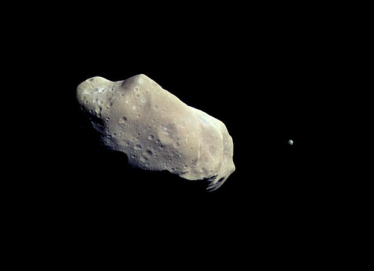
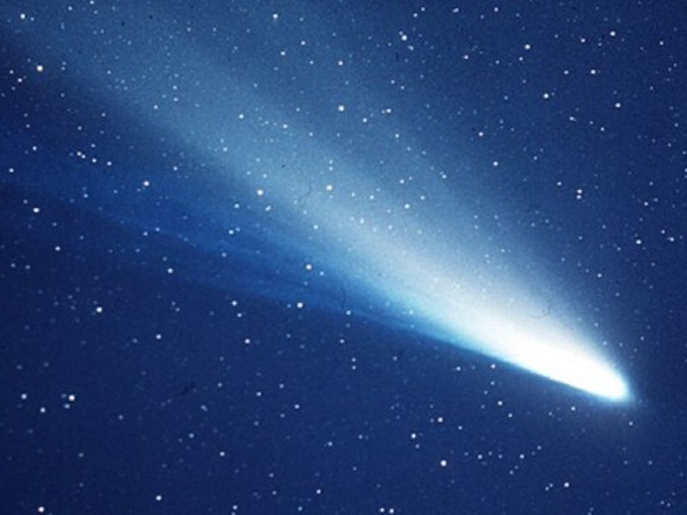
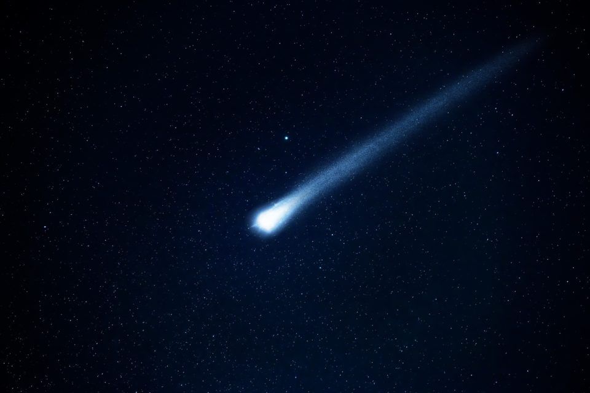
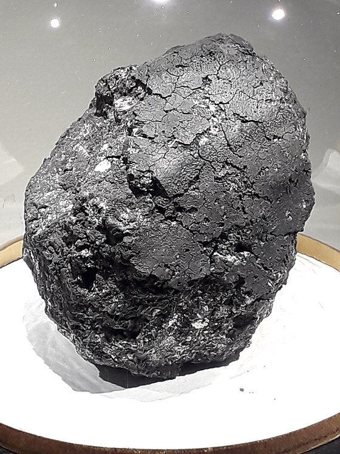

Pendant des milliers d'années, nul n'imaginait qu'il puisse y avoir d'autres mondes au-delà de Saturne, sixième planète connue. Mais certains suggéraient qu'il existait quelque chose entre Mars et Jupiter. Ce n'est pas une planète qu'on a découverte là mais des milliers d'objets rocheux : des astéroïdes.
Les astéroïdes sont des vestiges de la formation des planètes. La plupart tournent autour du Soleil entre les orbites de Mars et de Jupiter, bien qu'il existe quelques groupes que leurs orbites rapprochent de la Terre. Éros est l'un des plus grands astéroïdes proches de la Terre et le premier autour duquel une sonde a orbité. Creusé d'un grand cratère sur une face et d'une dépression sur l'autre, il a la forme d'une pomme de terre.
De temps à autre, un objet pourvu d'une queue vaporeuse surgit dans le ciel nocturne. C'est une comète, un bloc de poussières et de glace de quelques kilomètres, qui se précipite vers le Soleil. Plusieurs milliards de comètes orbitent très loin au-delà de Pluton.
Le noyau d'une comète est formé d'eau glacée mêlée de poussières, qui lui donnent un aspect sale. Quand la comète se réchauffe, la vapeur d'eau et les poussières dégagées par le noyau forment un nuage, ou coma. De longues queues bleues (gaz) ou blanches (poussières) s'étirent à partir de la coma sur des millions de kilomètres. Elles sont toujours orientées à l'opposé du Soleil.
On peut voir parfois dans le ciel nocturne la traînée éphémère tracée par un météore. Les météores, ou étoiles filantes, surgissent aussi soudainement qu'ils disparaissent en moins d'une seconde. Ce sont des particules de poussière qui se consument en entrant dans l'atmosphère à environ 54000 km/h.
Chaque année, quelque 200000 tonnes de poussières et de roches cosmiques pénètrent dans l'atmosphère terrestre. Les météoroïdes assez gros pour survivre à cette entrée brutale et atteindre la surface sont appelés météorites. La plupart sont des fragments d'astéroïdes brisés lors de collisions spatiales.
